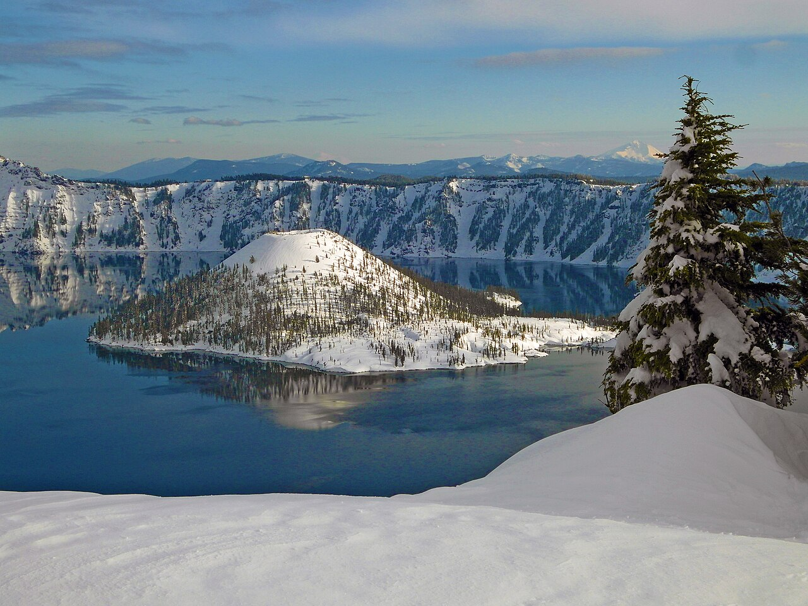

Mount Hood
高海拔赏雪机会高，但冰雪路面和牵引设备要求也最可能影响行程。
雪 / 冰 / 低温12 月 25 日从旧金山出发，从三条预设路线挑一条，也可以按自己的节奏安排雪山、海岸与北加州。
这趟路线横跨内陆山口、海岸与红杉林。12 月底的 Mount Hood 很可能有积雪；Cannon Beach 更常遇到雨、风和大浪；红杉林则以潮湿、阴凉为主。目前无法预测圣诞当周哪一天会下雪。
2026 年 10 月 NOAA 已发布 El Niño（厄尔尼诺）警报，并认为冬季可能持续偏强。它会改变全美季节性温度和降水的概率，但不能推断某个景点在某一天的雪况。这里的天气描述是季节特征与风险判断，不是逐日预报。NOAA ENSO 公报 ↗
高海拔赏雪机会高，但冰雪路面和牵引设备要求也最可能影响行程。
雪 / 冰 / 低温海边下雪少见。风雨、短暂放晴与高浪更值得提前准备。
雨 / 风 / 高浪林中通常湿冷，风暴后可能有倒木、积水或临时道路封闭。
潮湿 / 阴凉 / 雨NOAA 的冬季展望覆盖 12 月至次年 2 月，不能当作旅行期间的具体预报。出发前 7–10 天看 NWS；每天出发前再看 Oregon TripCheck 与 California QuickMap。
保留最初路线的全部 12 个地点，包括中转小镇和城市；另补 Multnomah Falls。是否纳入实际行程由你选择。照片摄于往年，不代表出发时的天气或活动现场。
Eugene、Medford 是调整后的行程使用的住宿和补给城市，不在最初的 12 站照片清单中。

冬季只能从西／南侧经 OR‑62 尝试进入；北入口与 Rim Drive 通常关闭，通往 Rim Village 的道路也可能因暴雪关闭。三套主线均不包含这里。只有路况与能见度都允许、并愿意取消其他景点且增加时间时再考虑。
照片：美国国家公园管理局 · 公共领域 / 来源 ↗ · NPS 冬季交通 ↗这份记录保留原截图中的顺序，不绑定本次 12 月 25 日出发的三套安排。
| 天数 | 行程 | 推荐住宿 |
|---|
以下基础驾驶时间均未包含充电、用餐、游览和冬季延误。选中方案后，地图、路段和每日安排会一起更新。
从空白开始，或导入任一预设；调整出发地点、停靠点和住宿地，地图与车程会同步更新。
先选择出发地点，再逐日添加停靠点和住宿地；最后一天返回旧金山。自定义计划不绑定日期，修改会自动保存在当前浏览器。
车程按本页已整理路段组成的道路走廊粗估，只用于比较节奏；不是实时导航，也不含充电、游览、休息、交通或冬季封路。若绕行 Crater Lake，务必先核查开放情况。
橙色节点是当前方案的停留点，灰色为其他方案可选但本版不安排的地点。路线连线仅说明顺序；分段导航请打开下方链接。
保留 Mount Hood 两晚与 Cannon Beach 一晚，把单日基础驾驶尽量控制在约 6 小时内。12 月 31 日仍须经 Siskiyou Pass 返回；遇到封路，不能保证当天抵达 SF。若临近 29 日预报明显恶化，应缩短或取消海岸停留，提前南返。
把节省的时间留给白天进山、正常用餐和分段返程。Eugene 与 Medford 是休息住宿点，不安排额外观光。
若出发当天取车或航班延误，首晚选择距离更近的中转住宿，不勉强夜间赶路。
租车合同是否允许防滑链、实际轮胎型号与州交通部门牵引要求，都要先确认。SUV 本身不等于免装链。
人数、是否带狗、Mount Hood 木屋雪季车道清理、停车位和取消规则，会影响最终预订。
复核 Siskiyou Pass、US‑26／OR‑35、海岸 US‑101，以及公园步道和瀑布周边的临时封闭。